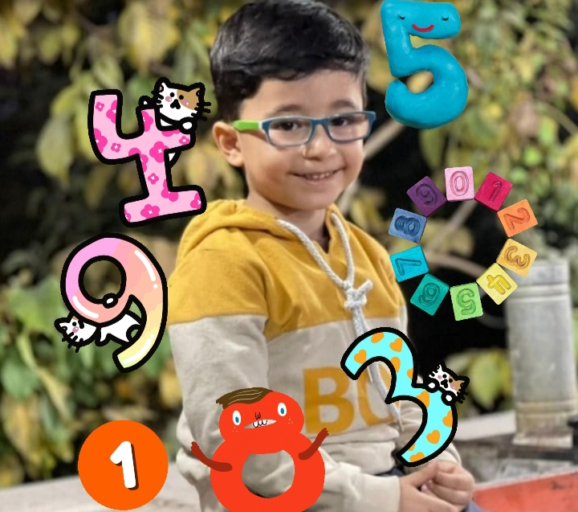
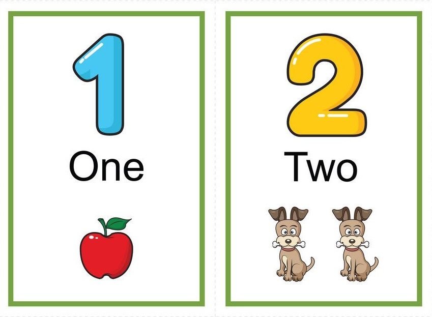
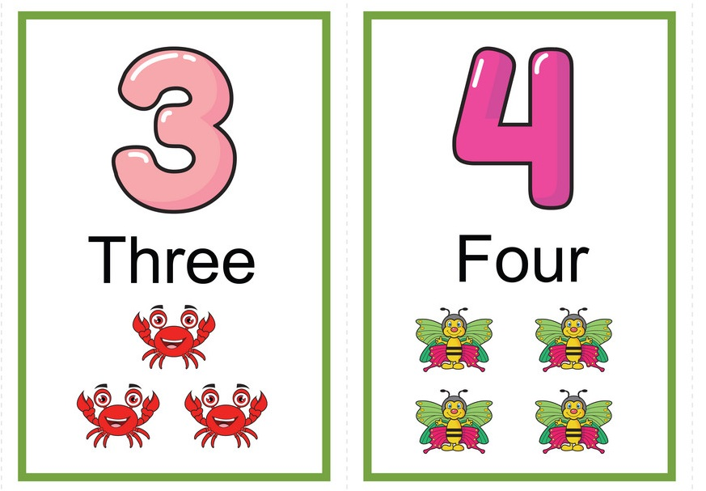
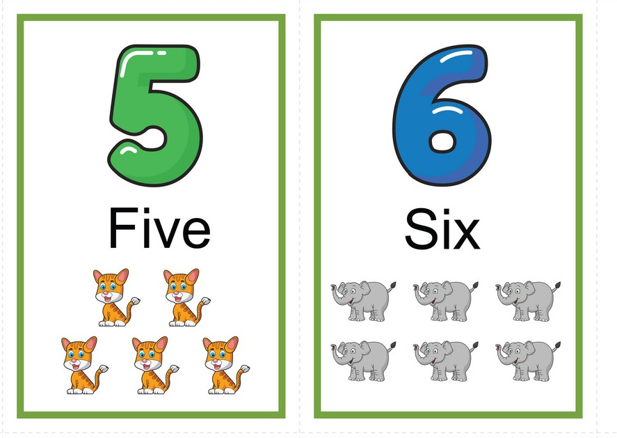
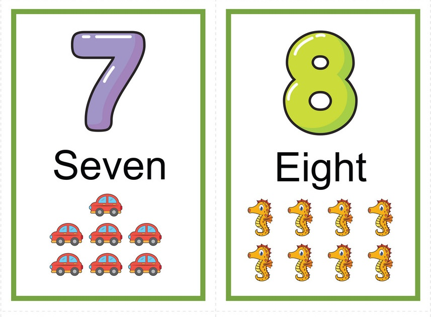
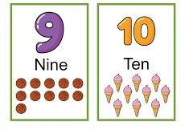

یادگیری اعداد انگلیسی
حتما با خنده و سرگرمی کودکان را تشویق به یادگیری کنید. سخت گیری ممنوع است کودکان هم زود خسته می شوند هم زود زده می شوند. کتاب های انگلیسی در خانه بخوانید، کارتون های انگلیسی با فرزندانتان ببینید و آهنگ های انگلیسی گوش کنید. فرزندانتان هر چه بیشتر انگلیسی بشنوند راحت تر آن را یاد میگیرند. اصولا ما زبان مادریمان را هم به همین شکل یاد گرفته ایم. کسی ما را به مدرسه یا کلاس نبرده است ولی ما راحت صحبت میکنیم و به خوبی میتوانیم ارتباط برقرار کنید. اگر محیط شامل المانهایی از زبان انگلیسی باشد، فرزندان به راحتی میتوانند آن را یاد بگیرند و با آن ارتباط خوبی برقرار کنند.برای مشاهده موزیکال اعداد کلیک کنید
اعداد انگلیسی




